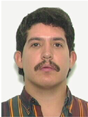
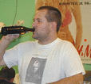

What Is The Eric Conspiracy?
Around 1987 someone on the newsgroup talk.bizarre uttered a semi-incoherent rant observing that there seemed to be an awful lot of hackers named Eric around -- ``and have you noticed'' (he said) ``that they all have moustaches and they're all UNIX system manglers?'' He then opined that these must be the secret signs of an insidious conspiracy.
Well, there went our deep, dark, ancient secret! No point in the hooded robes and solemn blood oaths of silence sworn by guttering torchlight anymore. Usenet has spoken. Yes, there is an Eric Conspiracy. You, too, may be eligible to join, use our nifty logo on your home page, and participate in our sinister plans for network and world domination!
Who Can Be a Member
To become an initiate of the Eric Conspiracy, you must meet the following criteria:
1. You must be an Eric
You may match on first, last, or middle name(s). We're not orthography bigots, if you're an Erik or Erich or Eirik you are also eligible. We're not sexists either, so Ericas and Erikas are also welcome. We've even managed not to be speciesist -- one of the qualified members is a cat.
2. You must have a Moustache
An eligible moustache may be real or virtual. You have a real moustache if you wear visible hair immediately above your upper lip. You have a virtual moustache if (a) you can produce pictures or the attestation of an initiated member to prove that you once had a real moustache, or (b) you can fake it. (Ericas and Erikas are encouraged to fake it.)
3. You must Mangle Unix
You are presumptively considered a Unix mangler if you are a Unix hacker, developer, or system administrator. If you are a Unix user, you are eligible if you have ever (a) run Unix on a home machine, (b) crashed your Unix host, (c) cracked your Unix host, (d) logged in late at night because you got tired of getting totally lagged during the day, thus ensuring that your host is swamped all the time.
Borderline cases will be decided by the iron whim of the initiated membership. (Yes, we can be bribed.)
Solemn Laws Of The Eric Conspiracy
- When asked if you are really a initiate of a sinister conspiracy to dominate the net and/or world, silently leave the room, say ``No comment'', smile without speaking or otherwise contrive to leave the questioner nervous, confused, and just a little more paranoid than he/she was before.
- At Eric Conspiracy meetings or while on Conspiracy business, address other initiates as `Bruce' (just to keep things clear).
- Always and everywhere, strive to earn Official Eric Conspiracy Coolness Points.
How to Earn Coolness Points
Any initiate can award another initiate Coolness Points. However, the award may be vetoed by any initiate with more coolness points than the awarder (but it's bad form to do this often). Here are some ways to earn Coolness Points:
- Practice your sinister maniacal laughter for use on noninitiates.
- Recruit new members.
- Use "Eric Conspiracy Secret Labs" as your Organization line. For extra sinister effect, add the following header to your outgoing mail and news: "X-Eric-Conspiracy: There is no conspiracy".
- Carrying the logo and a link back to the Conspiracy page on your home page.
- Pull off a particularly neat Unix hack.
- Recover bits of arcane Eric Conspiracy lore via your pineal gland from the akashic records -- new Solemn Laws, sinister plans for world domination, etc.
- Think up more ways for initiates to earn Coolness Points.
The Eric Conspiracy Logo
Here is the official Eric Conspiracy logo, recognized by paranoids the world over as the sign of a truly superior world-girdling conspiracy:
Watch for it on our soon-to-be released lines of sportswear, action figures, and cosmetics. There is also a gray and white wallpaper version you can use as a background, and a half-size version you can use as an icon for a web link to this page.
{kind=link}
{kind=link}
Here are some other variants of the logo:
(If the mustachioed one on your right looks a little weird, it's because older browsers don't yet do the transparent background on PNGs right.)
And now, the Eric Conspiracy has its very own counter-conspiracy -- the World Eric Watchers Organization. They think they can monitor us, comprehend our dark designs, and foil them. The poor, doomed fools...
The Initiates List
Eric S. Raymond (mail) (WWW)- 2 coolness points for building this Web page.
- 1 coolness point for doing a pretty good sinister maniacal laugh.
- 1 coolness point for recruiting Eric Pederson.
- 1 coolness point for recruiting Eric Sorensen.
- 1 coolness point for recruiting Eric Peterson.
- 1 coolness point for recruiting Eric Tilton.
- 1 coolness point for recruiting Eric Randall.
- 1 coolness point for routinely using "Eric Conspiracy Secret Labs" in his mail and news headers.
- 1 coolness point for recruiting Erik Rossen.
- 1 coolness point for only running Unix at home.
Eric Tiedemann (mail) (WWW)
- 1 coolness point for routinely using "Eric Conspiracy Secret Labs" in his mail and news headers.
- 1 coolness point for designing the "e-in-the-triangle" motif of the pyramidal Eric Conspiracy logo (see his Erics page).
Erik Fair (mail) (WWW)
- 1 coolness point for coathoring NNTP and general
wizardliness.
Erik Troan (mail) (WWW)
- 2 coolness points for co-maintaining one of the best Linux distributions.
- 1 coolness point for maintaining the Sunsite archive.
Erika Biga (mail)
- 1 coolness point for faking her mustache with unusual flair.
Eric Osborne (mail) (WWW)
- 1 coolness point for recruiting Erika Biga.
- 1 coolness point for appointing himself Official Keeper of the Eric Conspiracy Regexp and supplying the Perl script to prove it.
- 1 coolness point for recruiting Eric Gentzler.
Eric M. Ostrom (mail)
- 2 coolness points for writing a real-time Unix on a PDP-11 and totally freaking out Ken and Dennis.
Eric L. Pederson (mail) (WWW)
- 1 coolness point for maintaining the alt.sysadmin.recovery manpage archive.
- 1 coolness point for having thought up the "X-Eric-Conspiracy" header.
- 1 coolness point for routinely using "Eric Conspiracy Secret Labs" in his mail and news headers.
- 1 coolness point for recruiting Eric Smith.
Eric, the English domestic shorthair cat that owns Steve Fuller (mail),
- -1 coolness points for knocking Steve's new hard drive onto the floor, mangling the UNIX thereon.
Eric Sorensen (mail)
- 1 coolness point for dreaming up Satanic Sysadmins, Inc., because Satan is our master. Hail Satan!
Eric Peterson (mail)
- 1 coolness point for routinely using "Eric Conspiracy Secret Labs" in his mail and news headers.
- 1 coolness point for having the cojones to attempt to get a coolness point by bribery (i.e. telling me he bought my book). (No, this won't work for anybody else.)
- 1 coolness point for designing the Official Sinister ECSL Banner Graphic.
Eric Tilton (mail) (WWW)
- 1 coolness point for routinely using "Eric Conspiracy Secret Labs" in his mail and news headers (even before being informed of the Conspiracy's existence!).
Eric Smith (mail) (WWW)
- 1 coolness point for routinely using "Eric Conspiracy Secret Labs" in his mail and news headers.
Eric Benoit (mail) (WWW)
- 1 coolness point for recruiting himself.
- 1 coolness point for the Linux On A Floppy project.
Eric Hochman (mail)
- 1 coolness point for recruiting himself.
- 1 coolness point for having a laugh so sinister it gets him a seat on New York City subways.
Eric Randall (mail) (WWW)
- 1 coolness point for recruiting himself.
- 1 coolness point having built no fewer than five ISPs from the ground up.
Eric Hahn (mail)
- 1 coolness point for trying to bribe me with a coolness point (no, this won't work for anyone else, either!).
Eric Backus (mail)
- 1 coolness point being patient with my oversight in mislaying his application for four years.
Eric Grabowski (mail) (WWW)
- 1 coolness point for recruiting himself.
- 1 coolness point for really creative Unix mangling -- he once tried moving the kernel from / to /usr...
Eric Smith (mail) (WWW)
- 1 coolness point for maintaining a web page of Eric Smiths.
- 1 coolness point for having ported Xenix to the 80186. That's right, the *1*86...
Duncan Alistair Eirik Sargeant (mail) (WWW)
- 1 coolness point for recruiting himself.
- 1 coolness point for being the first silent Eirik - ``very few of my id documents carry the revealing 'E'. Most say only 'D A Sargeant', etc.''
- 1 coolness point for composing nifty ASCII versions of the
Official Eric Conspiracy Logo, suitable for use in sig blocks:
___ ^ \e/ or /e\ v ---
Eric E. Coe (mail)
- 1 coolness point for recruiting himself.
Erich Neuwirth (mail) (WWW)
- 1 coolness point for recruiting himself.
- 1 coolness point for running Sunsite Austria and successfully scamming a machine from Sun to do it.
Rik Erik Onckelinx (mail)
- 1 coolness point for recruiting himself.
Eric Holbrook (mail)
- 1 coolness point for recruiting himself.
Eric S. Johnson II (mail) (WWW)
- 1 coolness point for recruiting himself.
Eric Pareja (mail) (WWW)
- 1 coolness point for recruiting himself.
- 1 coolness point for routinely using "Eric Conspiracy Secret Labs" in mail headers.
Eric Buddington (mail) (WWW)
- 1 coolness point for recruiting himself.
Eric Smith (mail)
- 1 coolness point for recruiting himself.
- 1 coolness point for being a nuclear mechanic on an aircraft carrier.
Eric Pement (mail) (WWW)
- 1 coolness point for recruiting himself.
- 1 coolness point for maintaining the sed(1) FAQ.
Eric S. Smith (mail) (WWW)
- 1 coolness point for recruiting himself.
Eric Hegstrom (mail) (WWW)
- 1 coolness point for recruiting himself.
- 1 coolness point for havinge a pretty wicked maniacal laugh.
Eric Andreychek (mail) (WWW)
- 1 coolness point for recruiting himself.
- 1 coolness point for routinely using "Eric Conspiracy Secret Labs" in his signature and the canonical X-Eric-Conspiracy header.
- 1 coolness point for running only Unix at home.
- 1 coolness point for suggesting that running only Unix at home qualifies one for a coolness point.
Alan Eric Hodgkinson (mail)
- 1 coolness point for recruiting himself.
Eric Gindrup (mail)
- 1 coolness point for recruiting himself.
Eric Skagerberg (mail) (WWW)
- 1 coolness point for recruiting himself.
- 1 coolness point for using the Eric Conspiracy logo on his page before the Magister Maximus got around to enrolling him.
Eric L. Fong (mail) (WWW)
- 1 coolness point for recruiting himself.
Eric Wolf (mail) (WWW)
- 1 coolness point for recruiting himself.
- 1 coolness point for using the Eric Conspiracy logo on his page before the Magister Maximus got around to enrolling him.
Eric Princen (mail) (WWW)
- 1 coolness point for recruiting himself.
- 1 coolness point for sporting a truly maniacal grin.
Eric Seven (mail) (WWW)
- 1 coolness point for recruiting himself.
- 1 coolness point for the excellent O'Reilly parody on his home page.
- 2 coolness points for composing the two anti-aliased EC logos on the Conspiracy page.
Eirik Refsdal (mail) (WWW)
- 1 coolness point for recruiting himself.
Eirik Mikkelsen (mail) (WWW)
- 1 coolness point for recruiting himself.
Eric Moberg (mail) (WWW)
- 1 coolness point for recruiting himself.
- 1 coolness point for replacing his X-Devo-Quote header with "X-Eric-Conspiracy: There is no conspiracy"
- 1 coolness point for being able to do a pretty sinister guffaw as well as a chortle.
Eric Brewer (mail) (WWW)
- 1 coolness point for recruiting himself.
- 1 coolness point for founding Inktomi.
- 1 coolness point for using Unix to enable web/email/ssh access from the PalmPilot.
Arak van der Oudermeulen (mail) (WWW)
- 1 coolness point for recruiting himself.
Eric Blaine Werner (mail) (WWW)
- 1 coolness point for recruiting himself.
- 1 coolness point for running only Linux at home.
Eric Hopper (mail) (WWW)
- 1 coolness point for recruiting himself.
Lars Eric Henning Strandin (mail)
- 1 coolness point for recruiting himself.
Eric Kidd (mail) (WWW)
- 1 coolness point for recruiting himself.
- 1 coolness point for running only Unix at work and home.
- 1 coolness point for being part of the Evil Conspiracy to Sneak LISP back into Unix(tm).
Eric Bruce Lindsay (mail) (WWW)
- 1 coolness point for eschewing all the works of Redmond.
- 1 coolness point for actually being named Bruce.
- 1 coolness point for instigating Aussiecon III.
Eric Newhuis (mail)
- 1 coolness point for recruiting himself.
Eric Lorenz (mail) (WWW)
- 1 coolness point for recruiting himself.
Eric Redman (mail)
- 1 coolness point for recruiting himself.
- 1 coolness point for knowing how to play the didgeridoo.
Eric F. Galliher (mail) (WWW)
- 1 coolness point for recruiting himself.
- 1 point for creative Unix mangling, through overloading the circuit his SPARC was on with a microwave oven. When he tried to make popcorn, blue sparks came shooting out of the disk drive...
Kori Mikael Erick Voigt Prins (mail)
- 1 coolness point for recruiting himself.
Eriq Oliver Neale (mail) (WWW)
- 1 coolness point for recruiting himself.
Eric Hughes (mail) (WWW)
- 1 coolness point for recruiting himself.
- 1 coolness point for putting X-Eric-Conspiracy headers in his mail.
Stephan Erich Krautsdorfer (mail)
- 1 coolness point for recruiting himself.
Eric Meyer (mail)
- 1 coolness point for recruiting himself.
Lars Erik Martin Hylerstedt (mail) (WWW)
- 1 coolness point for recruiting himself.
- 1 coolness point for using the Conspiracy news and mail headers.
Erik Domstad (mail)
- 1 coolness point for recruiting himself.
Eric Gibson (mail)
- 1 coolness point for recruiting himself.
Erik Olson (mail) (WWW)
- 1 coolness point for recruiting himself.
- 1 coolness point for significant contribution to the Jargon File.
Erik de Castro Lopo (mail) (WWW)
- 1 coolness point for recruiting himself.
- 1 coolness point for running only Linux at home.
- 1 coolness point for using the Conspiracy headers.
- 1 coolness point for recruiting Eric Jacobsen.
Eric Mericle (mail)
- 1 coolness point for recruiting himself.
- 1 coolness point for undertaking to fake a mustache (in accordance with rule 2(b)) with his goatee, by standing on his head.
Eric Heidel (mail) (WWW)
- 1 coolness point for recruiting himself.
- 1 coolness point for designing the variant Conspiracy logo with the eye.
- 1 coolness point for suggesting that carrying the logo and linking back to the Conspiracy page from your home page is worth a coolness point
- 1 coolness point for doing the above.
Eric Naujock (mail) (WWW)
- 1 coolness point for recruiting himself.
- 1 coolness point for designing the variant Conspiracy logo with the eye.
Eric Allman (mail)
- 2 coolness points for writing the transport that handles 85% of the Internet's mail.
Eric Koskinen (mail) (WWW)
- 1 coolness point for recruiting himself.
- 1 coolness point for having a sinister laugh evil enough to make his wife nervous about what he is evolving into.
Erik Meltzer (mail) (WWW)
- 1 coolness point for recruiting himself.
- 1 coolness point for using the ECSL Organization header.
Erich Ziegler (mail) (WWW)
- 1 coolness point for recruiting himself.
- 1 coolness point for using the X-Eric-Conspiracy header.
Erik Jaeger Weber (mail) (WWW)
- 1 coolness point for recruiting himself.
Eric B. Hymowitz (mail) (WWW)
- 1 coolness point for recruiting himself.
- 1 coolness point for using the Conspiracy headers long before he joined the Conspiracy.
- 1 coolness point for the "hymie the sysadmin" Nethack character listing on his home page.
Erik Mouw (mail) (WWW)
- 1 coolness point for recruiting himself.
- 1 coolness point for running only Unix at home.
- 1 coolness point for using the "X-Eric-Conspiracy header and Eric conspiracy secret labs" as his Organization line.
- 1 coolness point for co-authoring VGAemu (the VGA emulator) in DOSemu (the Linux PC emulator). This allowed people to run Windows in an X window.
- 1 coolness point for major ARM Linux hacking.
Eric Harley (mail) (WWW)
- 1 coolness point for recruiting himself.
 Erik Rossen (mail) (WWW)
Erik Rossen (mail) (WWW)
- 1 coolness point for being the originator and/or discoverer of the prenatal mustache.
Eric Toonen (mail) (WWW)
- 1 coolness point for recruiting himself.
- 1 coolness point for writing Unix filks
- 1 coolness point for recruuiting Eric Zuiderduin.
Eric Busto (mail)
- 1 coolness point for recruiting himself.
Eric Richard Monson (mail) (WWW)
- 1 coolness point for recruiting himself.
David Eric Smith (mail) (WWW)
- 1 coolness point for recruiting himself.
- 1 coolness point for running only open-source operating systems.
Eric L. Reddish (mail)
- 1 coolness point for recruiting himself.
Eric Pierce (WWW) (mail)
- 1 coolness point for recruiting himself.
- 1 coolness point for practicing sinister maniacal laughter.
- 1 coolness point for using "Eric Conspiracy Secret Labs" as his Organization line.
- 1 coolness point for inventing "having something analog other than a webcam hooked up to the net" as a criterion for a coolness point.
Eric Norige (mail)
- 1 coolness point for recruiting himself.
Eric Brager (WWW) (mail)
- 1 coolness point for being a self-taught Unix hacker who runs installfests and sneaks Linux into every shop he infiltrates.
- 1 coolness point for using the ASCII logo in his sig block.
- 1 coolness point for running only Linux at home.
- 1 coolness point for using "Eric Conspiracy Secret Labs" as his Organization line.
Eric Zuiderduin (WWW) (mail)
- 1 coolness point for recruiting himself.
Eric Chaves (mail)
- 1 coolness point for practicing sinister maniacal laughter.
 Eric
Sharakan (mail)
Eric
Sharakan (mail)
- 1 coolness point for recruiting himself.
- 1 coolness point for hacking Unix to run on a CM-5.
Eric Nehrlich (mail) (WWW)
- 1 coolness point for recruiting himself.
Michelle Erica Campbell (mail)
- 1 coolness point for recruiting herself.
- 1 coolness point for having faked her mustache at a stag party where all the women were issued facial hair for the occasion.
- 1 coolness point for having a maniacal laugh so impressive that it has been recorded for a radio ad.
- 1 coolness point for using the Conspiracy headers.
- 1 coolness point for being married to a documented descendant of Erik Bloodaxe, the notorious Norse king.
Eric Jacobsen (WWW) (mail)
- 1 coolness point for talking Intel into giving him the job title "Minister of Algorithms".
Eric McGlohon (WWW) (mail)
- 1 coolness point for recruiting himself.
Eric Kuch (WWW) (mail)
- 1 coolness point for recruiting himself.
Erik Michaels-Ober (mail) (WWW)
- 1 coolness point for recruiting himself.
- 1 coolness point for using "Erik Conspiracy Secret Labs" as his organization line and an "X-Erik-Conspiracy: There is no conspiracy" header in outgoing mail and news.
Eric Larson (mail) (WWW)
- 1 coolness point for recruiting himself.
- 1 coolness point for cornering the Slashdot ID "The Eric Conspiracy".
Eric Eekhof (mail) (WWW)
- 1 coolness point for recruiting himself.
Thorbjørn Erik Lorentzen (mail)
- 1 coolness point for recruiting himself.
Eric Gasior (mail) (WWW)
- 1 coolness point for having helped develop the laser altimeter on the Mars Global Surveyor.
Eric (The Tigger Fox) Franson (mail) (WWW)
- 1 coolness point for recruiting himself.
- 1 coolness point for using the Conspiracy mail header.
Eric Michael Woolhiser (mail) (WWW)
- 1 coolness point for recruiting himself.
- 1 coolness point for carrying the logo and a link back to the Conspiracy page on his home page.
- 1 coolness point for recruiting Eric Dana.
- 1 coolness point for suggesting that a GPG or PGP-signed application should be worth a coolness point.
Eric Dubuis (mail)
- 1 coolness point for recruiting himself.
_____ /. .\ | . | | ~~~ | | \_/ | \_____/ |
Erik Sandberg (mail) (WWW)
|
 Eric Tomé Blackaller (mail)
- 1 coolness point for recruiting himself.
Erik Søderstrøm (mail)
- 1 coolness point for recruiting himself.
Erik Wahlén (mail) (WWW)
- 1 coolness point for recruiting himself.
Greg Eric Bacon (mail) (WWW)
- 1 coolness point for recruiting himself.
- 1 coolness point for using "Eric Conspiracy Secret Labs" as his organization line and an "X-Eric-Conspiracy: There is no conspiracy" header in outgoing mail and news.
Erik Wessing (mail) (WWW)
- 1 coolness point for having the domain `lensman.org'.
Erich Friesen (mail)
- 1 coolness point for recruiting himself.
- 1 coolness points for setting up a group on SETI at Home "X: Eric Conspiracy There is No conspiracy" and getting it started with his 126 seti at home work units.
- 1 coolness point for designing patterns from the game of Life into floor tile patterns for research buildings. (gliders and oscillators)
Eric Bischoff (mail) (WWW)
- 1 coolness point for recruiting himself.
Erik Boge (mail)
- 1 coolness point for recruiting himself.
- 1 coolness point for using the Conspiracy mail and news headers.
Erik Dana (mail)
- 1 coolness point for being responsible for the Sequent GDB port.
Daniel Eric Bennett (mail)
- 1 coolness point for recruiting himself.
Eric Murphy (mail)
- 1 coolness point for recruiting himself.
Eric Niver (mail) (WWW)
- 1 coolness point for recruiting himself.
Marcus Erik Andersson (mail) (WWW)
- 1 coolness point for recruiting himself.
- 1 coolness point for using the canonical Conspiracy mail headers.
- 1 coolness point for having a truly sinister laugh.
- 1 coolness point for having once healed a BSDI box by laying on of hands.
Eric M. Dashofsky (mail) (WWW)
- 1 coolness point for recruiting himself.
- 1 coolness point for carrying the logo and a link back to the Conspiracy page on his home page.
Eric Bear Albrecht (mail) (WWW)
- 1 coolness point for recruiting himself.
- 1 coolness point for carrying the logo and a link back to the Conspiracy page on his home page.
Eric Einhorn (mail) (WWW)
- 1 coolness point for recruiting himself.
- 1 coolness for, according to his friend April Fierro, "training her to be the ultimate geek chick". The world needs more geek chicks.
 Erik Pfundtner (mail)
- 1 coolness point for recruiting himself.
- 1 coolness point for running only Linux at home.
Erik Axel Nielsen (mail)
- 1 coolness point for recruiting himself.
- 1 coolness point for converting the last company he worked for from NT to Linux.
David Eric Vivian Beckford (mail)
- 1 coolness point for recruiting himself.
- 1 coolness point for having an extremely evil sinister grin.
Eric Gentzler (mail)
- 1 coolness point for having an extremely evil maniacal laugh.
Ralph Eric McGregor (mail)
- 1 coolness point for recruiting himself.
Eric Lebherz aka Theodoric Thorley (mail) (WWW)
- 1 coolness point for recruiting himself.
- 1 coolness point for a laugh so maniacal, I once chased a priest out of the confessional with it.
Erik J. Burckart (mail) (WWW)
- 1 coolness point for recruiting himself.
- 1 coolness for having a link back to Conspiracy website on his page.
Eric Weaver (mail) (WWW)
- 1 coolness point for recruiting himself.
Eric Weaver (mail) (WWW)
- 1 coolness point for recruiting himself.
Erik Brown (mail) (WWW)
- 1 coolness point for recruiting himself.
- 1 coolness point for having the logo on his splash page.
- 1 coolness point for only runing Unix at home.
Eric Shalov (mail) (WWW)
- 1 coolness point for recruiting himself.
- 1 coolness point for only running Unix at home.
- 1 coolness for having a link back to Conspiracy website on his page.
Eric Aube (mail)
- 1 coolness point for recruiting himself.
Björn Erik Abt (mail) (WWW)
- 1 coolness point for recruiting himself.
- 1 coolness point for only running Unix at home.
 Erik
Ritter (mail) (WWW)
Erik
Ritter (mail) (WWW)
- 1 coolness point for recruiting himself.
Eric Bodden (mail)(WWW)
- 1 coolness point for recruiting himself.